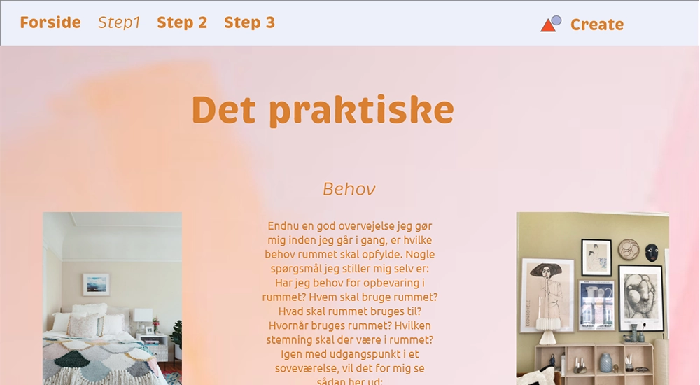

GRUNDLÆGGENDE WEB - EMNESITE
På dette tema, skulle vi med baggrund i det lærte fra mobilsitet opbygge vores eget website. Websitet skulle handle om en passion eller interesse vi havde.
Vi skulle i modsætning til mobilsitet selv finde billeder til brug på sitet der skulle være rettighedsfrie. Enten vores egne eller fra et medie såsom unsplash eller colourbox. Vi skulle konvertere disse billeder til .webp format og blev herigennem introduceret til squoosh.app.
Vi lærte omkring designprincipper, gestaltlove, farveharmonier, moodboards og styletile. Vi
arbejdede i
programmer som
adobe XD og photoshop.
Adobe XD brugte vi til at lave mock-ups, moodboard, styletile, wireframes og layoutdiagrammer.
Photoshop brugte vi til billedredigering og beskæring.
Adobe XD
Mockup fra XD

Mock-ups er lavet i adobe XD og viser sitet som en prototype. Og giver noget visuelt man kan kode efter.
Wireframe

Layoutdiagram

Her er et eksempel på wireframe og layoutdiagram fra emnesitet.
Design proces
Som en del af designfasen benyttede vi både et mindmap til at sætte nogle ideer i gang, i forhold til vores emne. Vi skulle herefter udvælge en stilart med udgangspunkt i: modernisme, retro design eller futuristisk.
Moodboard

Moodboard med udgangspunkt i valgt stilart: Memphis style
Moodboard bruges til at definerer en stil og kan hjælpe med at fange den følelse du gerne vil
have at sitet skal afspille.
Vi bruger adjektiver til at beskrive det vi gerne vil
illustrere på sitet
Styletile

Styletile der viser hvilke billeder og farver der benyttes på sitet.
Vi bruger styletile når vi har truffet vores designmæssige beslutninger omkring eks. de fonte, billeder, tekst udsnit, knapper og farver vi gerne vil benytte